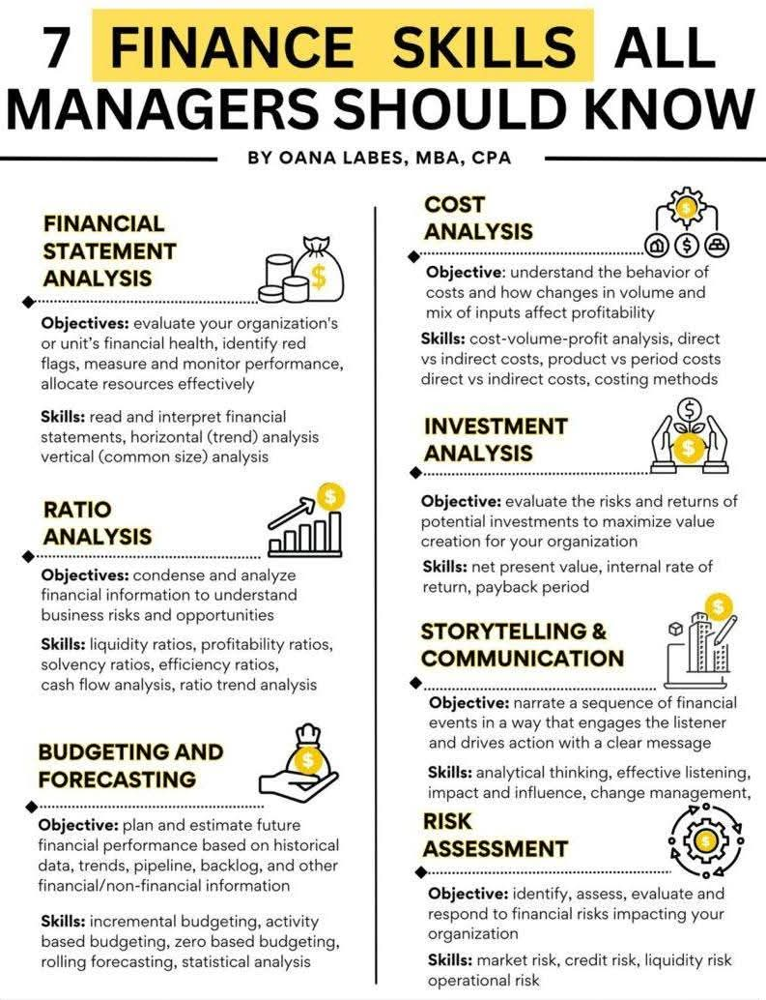

Sebuah Narasi Strategi dan Persahabatan Teknik Industri
Gerimis tipis mulai membasahi aspal di kawasan Jalan Riau, Bandung. Aroma kopi Arabika yang kuat menguar dari dalam sebuah kafe berkonsep industrial minimalis, tempat empat sahabat lama berkumpul. Mereka adalah produk unggulan dari pendidikan Teknik Industri di kota ini—individu-individu yang dididik untuk melihat dunia sebagai sekumpulan sistem yang harus dioptimasi. Namun, sore itu, suasananya sedikit lebih berat dari biasanya.

Referensi Utama: 7 Finance Skills All Managers Should Know oleh Oana Labes
Aris meletakkan tabletnya di atas meja kayu ek. Wajahnya tampak lelah. Sebagai manajer produksi di salah satu pabrik manufaktur komponen otomotif terbesar di Jawa Barat, ia baru saja melewati kuartal yang berat. "Margin kita menipis, tapi volume produksi stabil. Aku merasa ada yang salah, tapi aku tidak bisa menunjuk hidungnya dengan tepat," keluhnya.
Maya, yang duduk di hadapannya, menyesap latte panasnya sebelum menarik tablet Aris. Dengan cekatan, jemarinya menari di atas layar, membuka laporan laba rugi dan neraca perusahaan Aris. Inilah keahlian pertama yang mereka pelajari: Financial Statement Analysis.
"Aris, lihat ini," ujar Maya tenang. "Kamu fokus pada output, tapi kamu mengabaikan kesehatan unit secara keseluruhan. Jika kita melakukan horizontal analysis, biaya operasionalmu naik 15% dibandingkan tahun lalu tanpa adanya kenaikan harga jual yang setara. Ini adalah red flag yang sangat jelas."
Maya menjelaskan bahwa membaca laporan keuangan bukan sekadar melihat angka akhir, melainkan memahami narasi di baliknya. Ia menekankan pentingnya vertical analysis untuk melihat proporsi biaya terhadap total pendapatan. Sebagai lulusan Teknik Industri yang cerdas, mereka tahu bahwa inefisiensi sekecil apa pun di lantai produksi akan beresonansi di dalam neraca.
Dimas ikut condong ke depan. "Jangan lupa cek rasio likuiditasnya, May. Kalau cash flow macet, produksi seefisien apa pun tidak akan menyelamatkan perusahaan dari kebangkrutan teknis," tambahnya. Dimas, yang sehari-hari bergelut dengan valuasi startup, sangat memahami Ratio Analysis.
Mereka mulai membedah rasio profitabilitas dan efisiensi. "Inventory turnover kalian melambat," tunjuk Dimas. "Barang jadi menumpuk di gudang terlalu lama. Itu uang mati, Ris. Kamu harus menggunakan cash flow analysis untuk melihat di mana kebocoran likuiditas terjadi."
Diskusi semakin tajam. Kota Bandung di luar sana semakin gelap, namun di dalam kafe, cahaya dari layar tablet dan semangat intelektual mereka menerangi meja tersebut. Mereka sadar bahwa seorang manajer yang tidak memahami rasio keuangan ibarat pilot yang terbang tanpa instrumen navigasi.
"Masalahnya, bulan depan kita berencana ekspansi line baru," Aris menyela. "Tapi dengan kondisi sekarang, aku ragu."
Reza, yang sejak tadi diam mendengarkan sambil mencatat di buku moleskine-nya, akhirnya bersuara. "Itulah gunanya Budgeting and Forecasting, Ris. Kamu tidak bisa cuma pakai incremental budgeting yang sekadar menambah 5% dari anggaran tahun lalu. Kamu butuh Zero-Based Budgeting untuk line baru itu."
Reza menekankan bahwa forecasting bukan sekadar menebak masa depan, melainkan membangun model berdasarkan data historis, tren pasar, dan backlog pesanan. Di Teknik Industri, mereka mengenal peramalan permintaan, namun Reza membawa konsep itu ke ranah finansial yang lebih dingin dan kalkulatif.
Maya kembali mengambil kendali diskusi saat topik beralih ke Cost Analysis. Ia menjelaskan tentang Cost-Volume-Profit (CVP) analysis. "Kamu harus paham perilaku biaya di pabrikmu. Mana yang benar-benar direct costs dan mana yang indirect. Jangan-jangan, selama ini produk unggulanmu justru yang marginnya paling kecil karena pembebanan overhead yang tidak akurat."
Mereka mendiskusikan perbedaan antara product costs dan period costs. Bagi Aris, ini adalah momen "Aha!". Ia menyadari bahwa selama ini ia terlalu fokus pada kecepatan mesin, tanpa menyadari bahwa metode costing yang ia gunakan sudah usang dan tidak mencerminkan kompleksitas produksi saat ini.
"Lalu bagaimana dengan mesin baru itu?" tanya Aris.
"Gunakan Investment Analysis," jawab Dimas cepat. "Jangan cuma lihat harga belinya. Hitung Net Present Value (NPV) dan Internal Rate of Return (IRR)-nya. Jika payback period-nya lebih dari tiga tahun di industri otomotif yang dinamis ini, mungkin itu investasi yang buruk bagi nilai organisasi."
Mereka berdebat tentang diskon faktor dan risiko inflasi. Sebagai kalangan terdidik, mereka tidak menggunakan intuisi "kira-kira", melainkan perhitungan matematis yang presisi untuk memaksimalkan penciptaan nilai.
Reza mengetuk meja, mengingatkan mereka pada elemen yang sering terlupakan: Risk Assessment. "Risiko pasar, risiko kredit dari supplier, hingga risiko operasional seperti mogok kerja atau kerusakan mesin sistemik. Kamu harus mengidentifikasi dan menyiapkan mitigasinya, Ris."
Manajemen risiko bukan berarti takut mengambil langkah, melainkan berani melangkah dengan payung yang sudah siap terbuka. Reza memberikan perspektif bahwa setiap keputusan finansial selalu membawa bayang-bayang risiko yang harus dikelola, bukan dihindari.
Terakhir, Reza menutup diskusi dengan poin paling krusial bagi seorang manajer: Storytelling and Communication. "Semua data yang kita bahas ini akan percuma kalau kamu tidak bisa menyampaikannya ke direksi. Kamu harus menarasikan urutan peristiwa finansial ini sedemikian rupa sehingga mereka tergerak untuk bertindak."
"Tunjukkan dampaknya, berikan pengaruhmu, dan kelola perubahan itu," tambah Maya sambil tersenyum.
Malam kian larut di Bandung. Empat sekawan itu meninggalkan kafe dengan langkah mantap. Aris kini tidak lagi merasa buntu. Ia membawa pulang tujuh senjata finansial yang akan mengubah cara ia memimpin. Di bawah lampu jalan yang temaram, mereka sadar bahwa sinergi antara teknik dan finansial adalah kunci untuk menaklukkan tantangan industri modern.
Kisah ini merupakan ilustrasi betapa pentingnya pemahaman finansial bagi para profesional teknis. Dengan menguasai ketujuh keterampilan tersebut, seorang manajer tidak hanya mampu menjaga kelangsungan bisnis, tetapi juga menjadi katalisator pertumbuhan yang berkelanjutan.